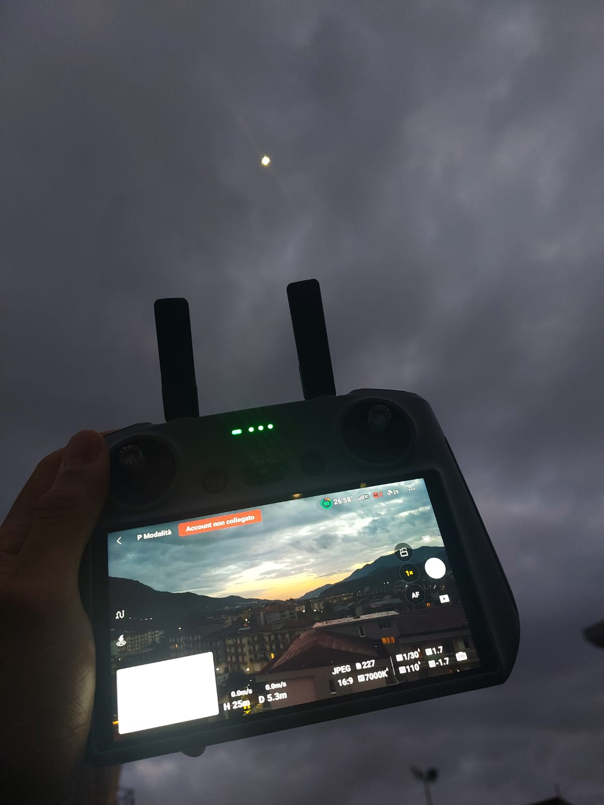
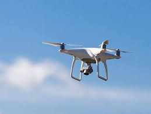

📜 Storia dei droni
I droni, noti anche come UAV (Unmanned Aerial Vehicle), sono dispositivi volanti controllati da remoto...
Nel corso dei decenni, la tecnologia dei droni si è evoluta rapidamente: dal controllo via radio al GPS...
Oggi i droni vengono utilizzati per fotografia, agricoltura di precisione, sicurezza, logistica e perfino...
Le normative europee hanno imposto regole più rigide per l’uso civile e hobbistico dei droni...
🎯 Obiettivo del corso
Il corso per la patente A1/A3 mira a fornire le competenze teoriche necessarie per volare in sicurezza...
Durante il corso, si imparano nozioni su: spazio aereo, meteorologia, gestione del rischio...
 